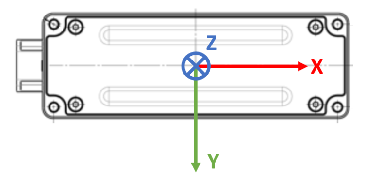
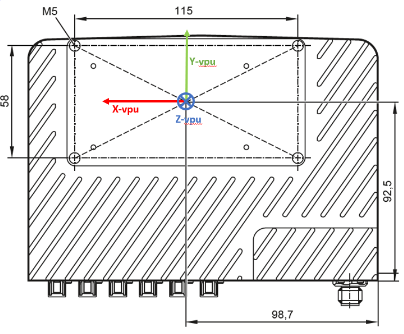

Camera mounting
The type of camera and mounting position of the camera will directly influence the performance of ODS. However, the ODS detection range is limited to a maximum of 4 m. Based on the camera head chosen, mounting height is the second most important factor for influencing detection range.
Additionally, visual odometry has to be enabled and functional in firmware 1.0.14 to estimate the AGVs / ARMs egomotion. For visual odometry, a large portion of the floor should be present in the field of view of at least one camera. To achieve this, the recommended mounting height is in the range of 250 mm to 700 mm from the ground. To know more about the factors that could influence the performance of ODS and to start benchmarking please refer to this document.
Coordinate systems
For the camera heads and VPU calibration, it is very important to know the position of the coordinate system’s origin of respective hardware components. These coordinate reference frame origins should be considered as a reference to camera heads / VPU while measuring the mounting positions on the AGV / AMR.
The camera head’s coordinate system origin is in the center of four mounting screws at the mounting plane of the head as shown in the figure below.

The VPU’s coordinate system origin lies at the center of the VPU mechanical interface, that is also the center of four mounting screws at the mounting plane.

Cable management
Cable management is essential for AGVs / AMRs for improved safety, reliability, efficiency, and maintenance. Therefore we recommend the following tips for cable management.
Before installing the cables, plan the layout of the cables and the paths. Take considering of the power source, control units or any other interfaces used in AGV / AMRs. This reduces the of damage to the cables and EMC & ESD interference.
Using the right size and type of cable is an effective way to keep the cables organized: please get in touch with your ifm sales engineer for more information about drag chain compatible HFM cables and HFM / FAKRA cable adapters and different cable lengths.
Labeling the cables is very important to keep track of what they are and where they end up. This helps to troubleshoot any issues that can arise and makes it easier to perform maintenance / repairs. ifm’s HFM cables (E3R1xx) cables come pre-labeled for their respective 2D and 3D imager data stream cables.
Strain relief can help to prevent damage to your cables by reducing the amount of tension or pulling force that is applied to them. This is especially important in areas where the cables may be subjected to movement and / or vibration.
These cables have an IP rating of IP54, that is the O3R camera head connector FAKRA plug, which is protected against limited ingress of dust and water but is not completely waterproof.
The FAKRA connector to the VPU housing is rated at IP50 - the same as the VPU itself.
It’s important to note that while IP54-rated cables offer some level of protection against dust and water, they may not be suitable for use in extremely wet or dusty environments. Please see the respective norms as a part of the cable specification sheets online
Note
The section about camera head maintenance and cleaning was moved to the technology section of the website.